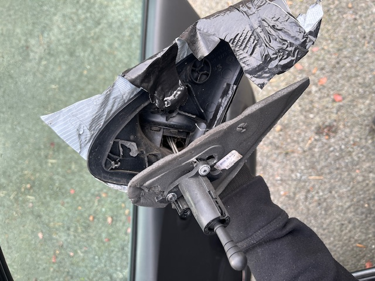
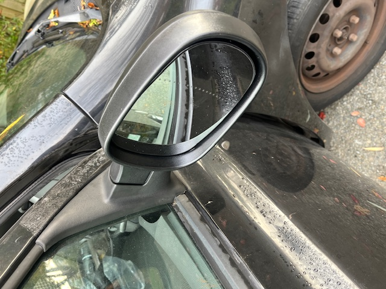

01 / Visibility & trim
Driver Wing Mirror Replacement
Removed the damaged driver-side mirror assembly and fitted a replacement, restoring a secure housing and clear rearward visibility. The repair was completed at the vehicle location.